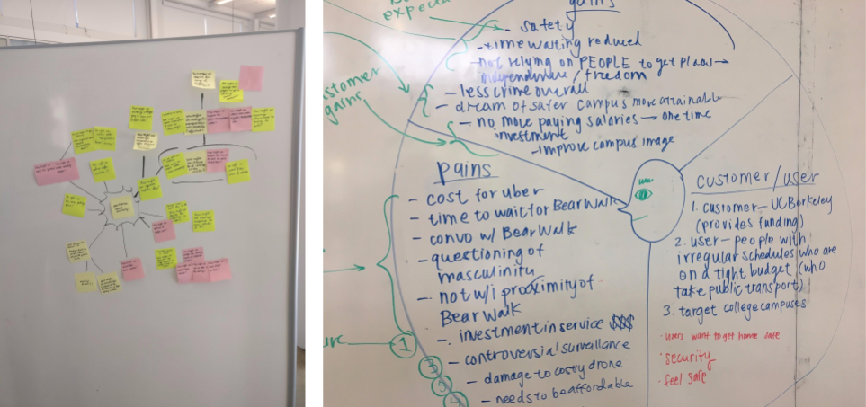
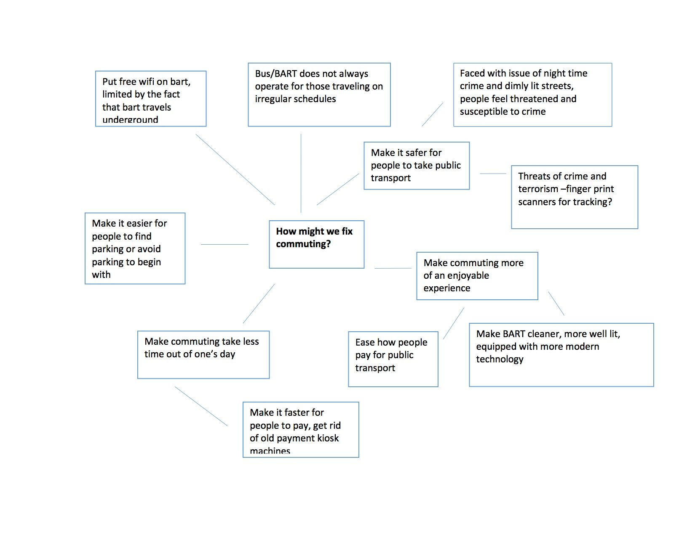
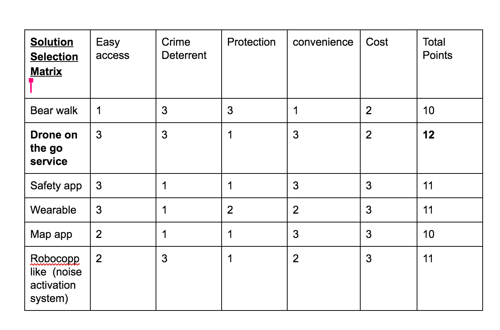
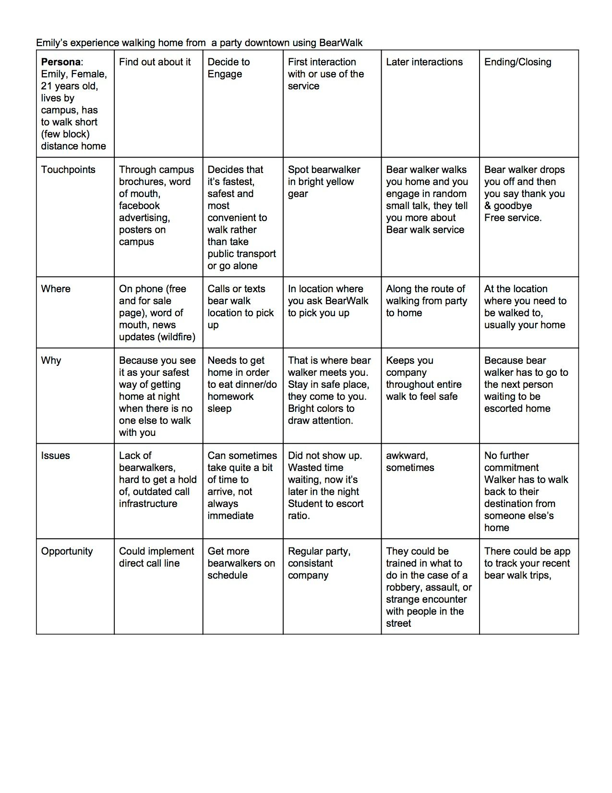
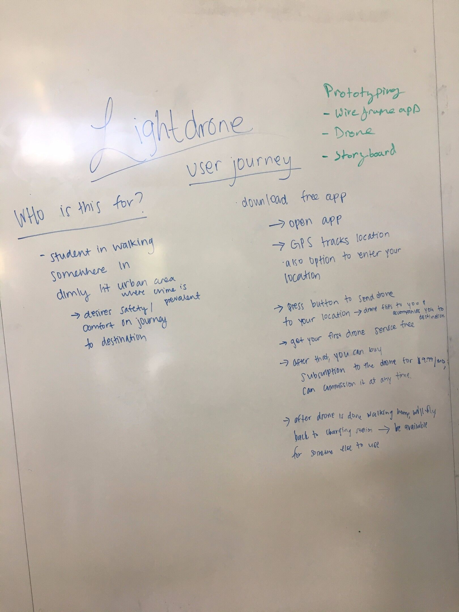
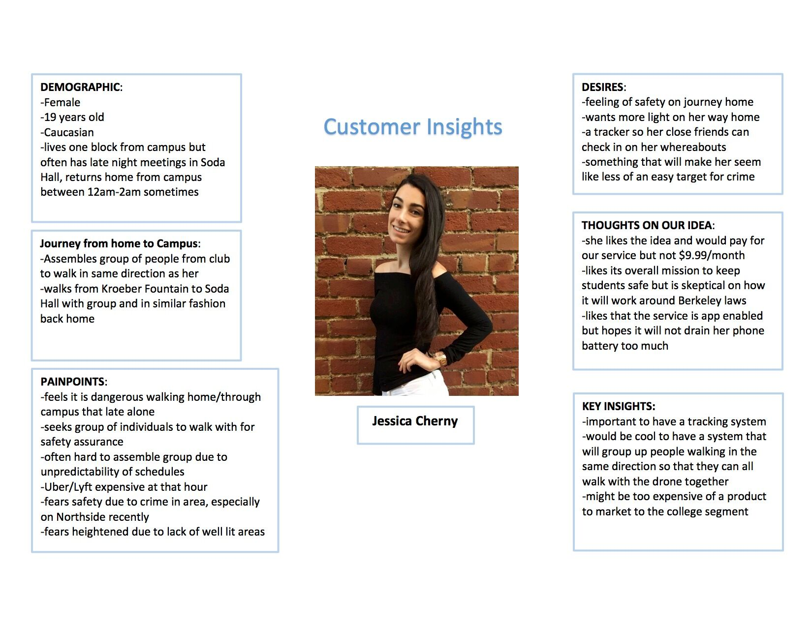
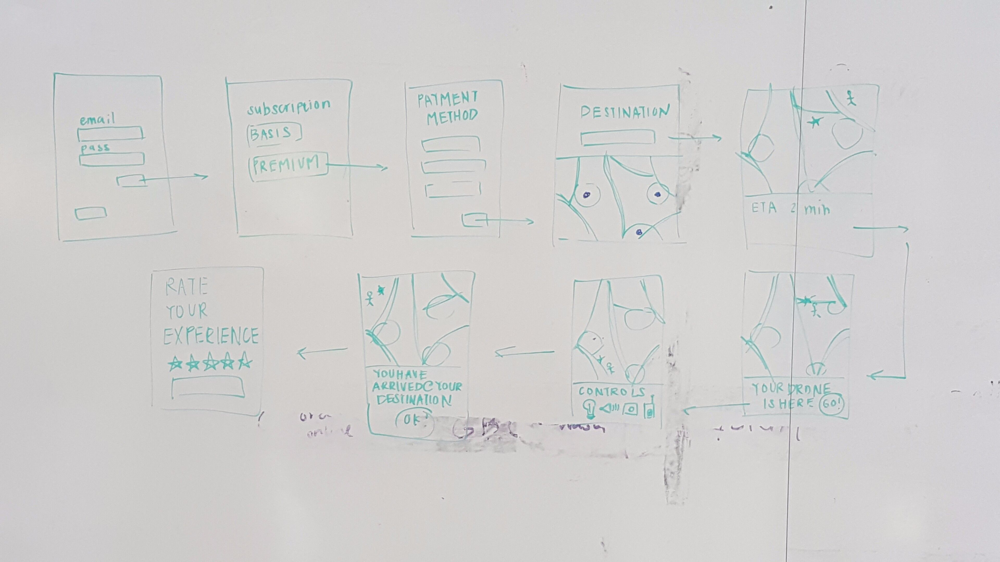
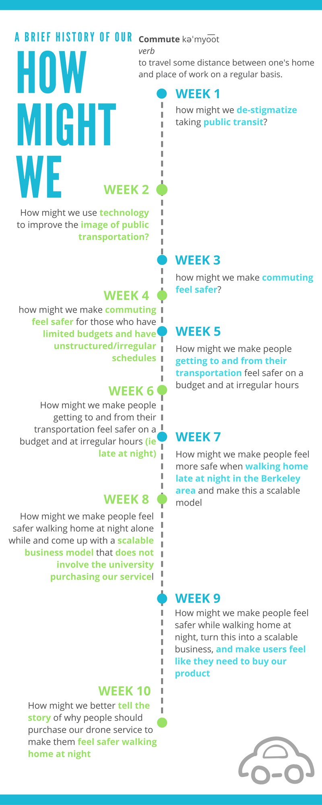

- Introduction
- Team
- Prompt
- 01 — Abstraction
- 02 — Competitive Analysis
- 03 — Initial Solution
- 04 — Interviews
- 05 — User Persona
- Mock Up
- Final Solution
Cathleen Jia
View All >
Index
Knight Light Ideation/Business Model + UI/UX
Knight Light is an autonomous drone service for university students. This was created for a design methodology course taken in my fall 2016 semester at UC Berkeley.

Team
I worked along side a team of 4 others to see this project from ideation to showcase. We all worked equally in the ideation side of the project. In the later stages, I worked with a partner on the UI/UX end of the project. At the end of this course, we presented at the Jabobs Institute Winter Showcase.
Prompt
We were given this question to build our product around: How might we improve commuting?
Ideation
01 — Abstraction
We started with a web of abstraction, abstracting the question with potential solutions and problems faced by commuters. We jotted down various versions of the given "How might we", no matter how specific or vague, on post-it notes. These varied from "How might we improve the BART?" to "How might we make commuting faster?". Together, we selected a few questions we wanted to focus on. We also created a diagram of user insights, listing gains, pains, and details about the target user.
We also drew a web of possible solutions to "improving commuting".
 02 — Competitive Analysis
At this point, we had decided to take our prompt in the safety direction: "How might we make commuting safer?". Our solution entailed an automated drone service that would walk the user home as sort of surveillance system. We researched current solutions, and we accessed the effectiveness of each in a solution selection matrix. Comparing the scores with the projected scores of our idea, we concluded that our product was an idea worth exploring further.
We also did an in depth user experience breakdown for an existing solution.
03 — Initial Solution
With our newly formed idea of an automated drone service, we fleshed out the idea on a white board. As a team, we decided we wanted to make this a service that could be requested via mobile app. We jotted down who our target user would be and their progression through our app.
04 — Interviews
With this on hand, we spoke to our target audience. We pitched students our idea and noted down their responses. We conducted a grand total of 50 interviews with UC Berkeley students and faculty. Below is an example of one of our customer insights; we detailed who she is, what her daily life looks like, her needs and desires, and, finally, her response to our pitch.
In addition to these interviews, we spoke to professionals.
Campus Officer Wayde McAdam gave us insight to competing service, Bear Walk, and the state of safety measures taken currently:
“Bear Walk was canceled but reinstated by the chancellor out of necessity, in addition to the school not having any money and Wade stating UCB would not pay for such a system. Wade gets about 5 phone calls a day from parents concerned with safety.”
We also consulted UAVs@Berkeley, a drone club on campus, for technical and implementation advice.
05 — User Persona
With insights from our interviews, we created our user persona. Here are the key insights we based this persona upon:
- Safe commuting
- Irregular Schedule
- Tight Budget
- Independent Lifestyle
- Academic Success
Low Fidelity Mock Up
We flushed out the progression our using our service from start to finish:
- Order drone from mobile device
- Drone leaves charging station
- Drone arrives to our location
- Begin route to destination
- Customize emergency features
- Arrive to destination
- Drone returns to charging station
We quickly sketched out a wireframing of the app.
Final Solution
Key Features
- Surveillance camera: records user's journey home. (Footage is not released to public.)
- Overhead spotlight: turned on and off via mobile device in unsafe conditions
- GPS Tracker: keeps track of drone for security
- Alert signal: triggered at the push of panic button via mobile device; alerts local police
- Siren: turned on and off via mobile device in unsafe conditions
Find a video demo to the app below.
Here is a progression of our "how might we" as we approached our final product. As the semester went on, our question evolved depending what stage we were at development.
